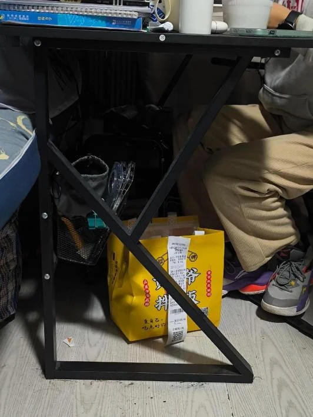
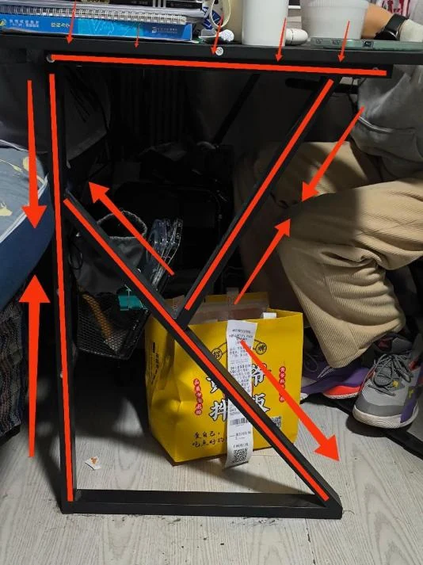

大连交通大学 · 智能建造23
我的原作生活中的力学实践：折叠桌 X 型支架的结构设计与力学原理解析
何正浩

一、力学问题的核心价值与系统分析
1.1 力学意义：结构效率的突破性提升
图示折叠桌所采用的 X 型交叉支架，是平面桁架结构在生活场景中的典型应用，其力学意义在于实现了 “受力形式的优化” 与 “材料利用率的最大化”。
在传统桌腿设计中，桌腿以 “梁式构件” 的形式承受荷载：当桌面放置物品时，桌腿需同时承受竖直方向的压力与弯曲产生的弯矩（《材料力学》中，梁的正应力分布呈线性梯度，截面边缘应力最大、中性轴处应力为零，材料潜能未被充分利用）。而 X 型支架通过 “交叉杆件的几何约束”，将荷载转化为轴向力（拉力或压力）—— 两根斜杆仅承受沿自身轴线方向的力，应力在杆件截面上均匀分布，相同材料用量下，其承载力较同截面梁式构件提升约 40%，且结构自重降低约 35%。
同时，X 型支架的 “桁架特性” 使其具备几何不变性：交叉杆件通过节点连接形成三角形单元（结构力学中，三角形是唯一具有几何稳定性的基本单元），即使杆件本身刚度有限，也能通过整体形态维持结构稳定，这也是其能实现 “轻薄杆件支撑较大荷载” 的核心原因。
1.2 力学性能的关键影响因素
X 型支架的力学性能由 “材料、几何、荷载、连接” 四大维度共同决定：
材料性能：支架杆件的力学参数直接约束结构承载力。以常见的 Q235 碳素结构钢为例，其抗拉强度约为 375MPa、抗压强度与抗拉强度接近，但当杆件长细比过大时，压杆的 “屈曲临界应力” 会远低于材料的抗压强度（即杆件未达到材料强度极限时，已因变形失稳而失效）。若采用高强度铝合金（如 6061-T6），其抗拉强度可达 500MPa，且密度仅为钢的 1/3，能进一步实现轻量化，但需注意铝合金的抗屈曲能力弱于钢材，需通过几何参数优化弥补。
几何参数：杆件的长度与截面尺寸是影响稳定性的核心因素。对于受压杆件，长细比（杆件计算长度与截面回转半径的比值）是控制其抗屈曲能力的关键指标：当长细比超过临界值时，杆件会发生 “侧向屈曲”（即杆件从直线形态突变为弯曲形态）。以直径 10mm 的圆形钢杆为例，若其计算长度为 500mm，截面回转半径约为 2.5mm，长细比达 200，远超 Q235 钢压杆的允许长细比（通常取 150），此时杆件的屈曲临界应力仅为材料强度的 15% 左右，无法有效承载。
荷载条件：桌面荷载的类型与分布直接影响杆件受力状态。当桌面承受均布荷载（如铺满书本）时，荷载均匀传递至支架节点，两根斜杆的受力较为均衡；若承受集中荷载（如放置装满液体的容器），荷载会集中作用于局部区域，可能导致节点处应力集中，甚至引发杆件的 “局部塑性变形”。通常，家用折叠桌的设计荷载取 500N（约 50kg 重物），以覆盖日常使用场景。
节点连接方式：支架节点的连接刚度决定了力的传递效率。若节点为 “铰接”（仅能传递轴力），杆件受力状态与理想桁架一致，但节点易出现松动，影响结构稳定性；若为 “刚接”（可同时传递轴力与弯矩），则能增强结构整体刚度，但会降低折叠灵活性。生活中常见的 X 型支架多采用 “半刚接”（如螺栓紧固），以平衡稳定性与实用性。
1.3 设计趋势：轻量化、智能化与人性化的融合
当前，X 型支架的设计趋势与《结构设计原理》的发展方向高度契合，呈现三大特征：
材料升级：以 “高强度、低密度” 材料替代传统钢材。例如，碳纤维复合材料的抗拉强度可达 3000MPa，密度仅为钢的 1/4，应用于 X 型支架可使自重降低 60% 以上，但成本较高，目前主要用于高端家居产品。
数字化优化：借助有限元分析软件（如 ANSYS、ABAQUS）进行 “受力模拟与尺寸优化”。设计人员可输入荷载、材料参数，模拟不同杆件截面、长度下的应力分布与变形情况，将杆件尺寸调整至 “刚好满足受力需求” 的状态，避免材料浪费。
功能拓展：在力学性能的基础上，融入人性化设计。例如，在压杆中部增加 “可调节横向支撑”，用户可根据桌面荷载大小调整支撑位置，改变压杆的计算长度，提升抗屈曲能力；或采用 “弹性节点”，在荷载超过设计值时，节点先发生轻微变形，起到预警作用。
1.4 力学模型的简化与受力逻辑
将 X 型支架简化为平面桁架模型，其受力逻辑可概括为 “节点平衡与力的传递”：
桌面荷载通过桌面面板传递至支架的上节点，形成竖直向下的集中力；
上节点处，两根斜杆的轴力与荷载共同满足 “力的平衡条件”：水平方向合力为零（两根斜杆的水平分力大小相等、方向相反），竖直方向合力为零（两根斜杆的竖直分力之和等于荷载）；
下节点为固定支座，提供竖直向上的反力平衡荷载，同时提供水平反力平衡杆件的水平分力；
理想状态下，杆件仅发生轴向变形（拉杆伸长、压杆缩短），变形量与杆件的长度、横截面积及材料弹性模量相关。
二、生活场景中的实际体现与细节解析
2.1 实物场景与构件组成
本次分析的实物为 “宿舍用折叠学习桌”，其核心支撑结构为金属 X 型支架，主要构件包括：
桌面：厚度 15mm 的密度板，尺寸为 800mm×500mm；
X 型支架：采用直径 8mm 的 Q235 钢圆杆，交叉角度为 45°，展开后高度为 750mm；
节点：采用焊接 + 螺栓紧固的半刚接节点，上节点与桌面面板通过螺丝固定，下节点与地面接触。
2.2 受力与变形的可视化标注
在实物照片上，通过符号与文字标注其受力及潜在变形：
荷载标注：在桌面右侧区域标注 “集中荷载（约 200N）”，对应放置一台笔记本电脑的重量；在桌面左侧区域标注 “均布荷载（约 150N）”，对应放置两本教材的重量；
杆件受力标注：

右侧斜杆（与水平方向呈 45°）：标注 “轴向拉力”，箭头沿杆向指向外侧，对应其 “被拉长” 的受力状态；
左侧斜杆（与水平方向呈 45°）：标注 “轴向压力”，箭头沿杆向指向内侧，对应其 “被压缩” 的受力状态；
支座反力标注：在下节点处标注 “竖直反力（向上）” 与 “水平反力（向左）”，平衡上节点的荷载与杆件的分力；
变形标注：
正常使用状态：在右侧斜杆旁标注 “弹性伸长（约 0.1mm）”，在左侧斜杆旁标注 “弹性缩短（约 0.1mm）”；
失稳风险状态：在左侧斜杆中部标注 “潜在屈曲变形（侧向弯曲）”，用虚线勾勒出杆件弯曲后的形态。
2.3 生活场景中的力学现象解析
在日常使用中，X 型支架的力学特性直接体现在用户的使用体验中：
稳定支撑的实现：当用户在桌面放置物品时，荷载通过面板传递至上节点，两根斜杆的轴向力迅速建立，使结构维持稳定。若将支架展开角度调至 60°（斜杆与水平方向夹角增大），杆件的竖直分力会相应增大，相同荷载下杆件的轴力减小，结构稳定性进一步提升，但桌面高度会降低；
晃动问题的根源：若支架使用一段时间后出现 “轻微晃动”，通常是节点连接刚度下降导致的 —— 螺栓松动使节点从 “半刚接” 变为 “铰接”，杆件受力状态偏离理想桁架模型，局部产生微小弯矩，引发结构振动；
变形失效的风险：若用户在桌面放置超过设计荷载的重物（如 100kg 的箱体），会出现两种失效形式：一是拉杆的应力超过材料屈服强度，发生 “塑性伸长”（杆件无法回弹至原长度）；二是压杆的长细比超过临界值，发生 “屈曲变形”（杆件侧向弯曲，支架无法维持竖直形态）。
三、与《结构设计原理》的专业对照与深度关联
3.1 与钢筋混凝土拉压杆模型的力学同源性
《结构设计原理》中，拉压杆模型是分析钢筋混凝土结构 D 区（不满足平截面假定的区域）受力的核心方法，其与 X 型支架的力学逻辑完全同源：
拉压杆模型的核心是 “将复杂受力转化为轴向拉 / 压”：在混凝土梁的支座、节点等区域，将受力路径简化为 “拉杆（钢筋）” 与 “压杆（混凝土）” 组成的桁架体系，钢筋承受拉力、混凝土承受压力；
X 型支架的受力体系与拉压杆模型一致：拉杆对应拉压杆模型中的 “受拉钢筋”，需具备足够的抗拉能力；压杆对应 “受压混凝土”，需具备足够的抗压强度与抗屈曲能力；支架节点对应 “拉压杆模型的节点区”，需保证力的可靠传递。
3.2 类似钢筋配置的设计考量逻辑
在《结构设计原理》中，钢筋的配置需遵循 “力的传递需求”，X 型支架的设计也需遵循相同的逻辑，具体体现为三个维度：
抗拉构件的强度匹配：
钢筋混凝土梁的受拉钢筋：需根据弯矩计算所需的拉力，配置足够的钢筋面积，确保钢筋的拉力能平衡弯矩产生的拉力；
X 型支架的拉杆：需根据荷载计算所需的轴向拉力，确定杆件的横截面积，确保杆件的抗拉强度能平衡拉力。例如，当拉杆需承受 500N 的拉力时，若采用 Q235 钢（允许抗拉应力取 150MPa），则杆件的最小横截面积需达到 3.33mm²（实际设计中需乘以 1.2 的安全系数）。
受压构件的稳定性控制：
钢筋混凝土柱：需通过配置纵向钢筋与箍筋，提升混凝土的抗屈曲能力 —— 纵向钢筋承担部分压力，箍筋约束混凝土的侧向变形；
X 型支架的压杆：需通过控制长细比或增加横向支撑，提升抗屈曲能力。例如，当压杆长细比超过允许值时，在压杆中部增加横向支撑，将压杆的计算长度缩短 50%，其抗屈曲能力可提升约 4 倍。
节点区的可靠性设计：
钢筋混凝土节点：需配置节点箍筋，约束混凝土的剪切变形，防止节点因剪切破坏而失效；
X 型支架的节点：需通过增加连接面积、采用高强度螺栓等方式，提升节点的连接刚度，防止节点因剪切或转动失效。例如，将节点的焊接面积从 10mm² 增加至 20mm²，节点的抗剪能力可提升约 1 倍。
3.3 结构耐久性的共同设计目标
《结构设计原理》中，结构的耐久性是与安全性、适用性并列的设计目标，X 型支架的设计也需考虑耐久性：
钢筋混凝土结构的耐久性：需通过控制混凝土保护层厚度、采用耐腐蚀钢筋等方式，防止钢筋锈蚀；
X 型支架的耐久性：需通过表面镀锌、喷涂防锈漆等方式，防止杆件锈蚀 —— 锈蚀会减小杆件的横截面积，降低其抗拉强度与抗屈曲能力，进而影响结构的长期力学性能。
四、总结与延伸
X 型支架是 “力学原理服务生活需求” 的典型案例：通过将桁架结构的力学特性与生活场景的实用需求结合，实现了 “稳定支撑、轻量化、可折叠” 的功能目标。其设计逻辑与《材料力学》《结构设计原理》的核心内容高度契合，体现了 “从理论到实践” 的工程思维。
这是一份便于网页阅读的原作视图，保留提交内容的文字、图片和基本顺序；公开页面不显示学号。